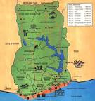
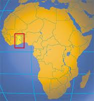
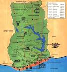
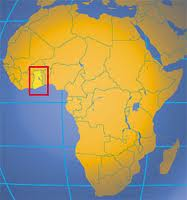
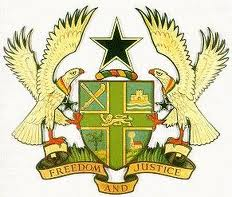
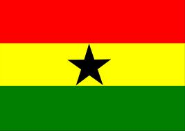
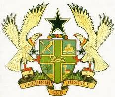
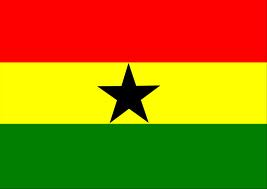

Ghana[a] is a country located in West Africa. It is bordered by Côte d'Ivoire (Ivory Coast) to the west, Burkina Faso to the north, Togo to the east, and the Gulf of Guinea to the south. The word Ghana means "Warrior King" and is derived from the ancient Ghana Empire.
Ghana was inhabited in pre-colonial times by a number of ancient predominantly Akan kingdoms, including the inland Ashanti Empire, the Akwamu, the Akyem, the Bonoman, the Denkyira, and the Fante among others. Non-Akan states created by the Ga and Ewe also existed as did states by the Gonja, Dagomba and others. Prior to contact with Europeans trade between the Akan and various African states flourished due to Akan's gold wealth. Trade with European states began after contact with the Portuguese in the 15th century, and the British established the Gold Coast Crown colony in 1874 over parts but not all of the country.
The Gold Coast achieved independence from the United Kingdom in 1957, becoming the first sub-Saharan African nation to do so, and the name Ghana was chosen for the new nation to reflect the ancient Empire of Ghana, which once extended throughout much of west Africa. Ghana is a member of the South Atlantic Peace and Cooperation Zone, the Commonwealth of Nations, the Economic Community of West African States, the African Union, and an associate member of La Francophonie. Ghana is the second largest producer of cocoa in the world and is home to Lake Volta, the largest artificial lake in the world by surface area. The economy of Ghana has been listed as The World's Fastest Growing Economy in 2011 with an economic growth of about 20.146% for the year 2011 in economic research led by Economy Watch with data coming from the IMF's tracker of GDP Growth in constant prices in the national currency.
There is archaeological evidence showing that humans have lived in present-day Ghana since the Bronze Age. However, until the 11th century, the majority of modern Ghana's area was largely unoccupied.[14] Although the area of present-day Ghana has experienced many population movements, the major ethnic groups in Ghana today were firmly settled by the 16th century.[15] By the early 11th century, the Akan were firmly established in a state called Bonoman, for which the Brong-Ahafo Region region is named The Mole-Dagbane as well as the Mossi states were well established by the 16th century, with the Gonja state being established by the 17th Century.
From the 13th century, numerous groups emerged from what is believed to have been the Bonoman area, to create several Akan States, mainly based on gold trading. These states included Denkyira, Akwamu, and Akyem. By the 19th century, most of modern Ghanaian territory was included in the Empire of Ashanti, one of the most influential states in sub-Saharan Africa prior to colonial rule. The Ashanti government operated first as a loose network, and eventually as a centralized kingdom with an advanced, highly specialized bureaucracy centred in Kumasi. It is said that at its peak, the Asantehene could field 500,000 troops, and it had some degree of military influence over all of its neighbours.
Early European contact by the Portuguese, who came to Ghana in the 15th century, focused on the extensive availability of gold. The Portuguese first landed at a coastal city inhabited by the Fante nation-state, and named the place Elmina. In 1481, King John II of Portugal commissioned Diogo d'Azambuja to build Elmina Castle, which was completed in 3 years. The Portuguese aim was to trade for Akan gold.
The legal system is based on British common law, customary (traditional) law, and the 1992 constitution. Court hierarchy consists of Supreme Court of Ghana (highest court), courts of appeal, and high courts of justice. Beneath these bodies are circuit, magisterial, and traditional courts. Extrajudicial institutions include public tribunals.
Since independence, courts are relatively independent; this independence continues under Fourth Republic. Lower courts are being redefined and reorganized under the Fourth Republic
The economy of Ghana was listed as The World's Fastest Growing Economy in 2011 in economic research led by Economy Watch with data coming from the IMF's tracker of GDP Growth in constant prices in the national currency (not converted to US dollars), with an economic growth predicted to be about 20% in 2011.[12] Other countries have competing claims to be the fastest growing economy
Ghana is a Middle Income Economy.[52] Well endowed with natural resources, Ghana has more than twice the per capita output of the poorer countries in West Africa. Known for its gold in colonial times, Ghana remains one of the world's top gold producers. Other exports such as cocoa, crude oil, natural gas, timber, electricity, diamond, bauxite,[53] and manganese are major sources of foreign exchange, even though Ghana continues to experience electricity and gas shortages, and remains a developing nation after 55 years of independence from the declining Britain.[54]
1st President of the Republic of Ghana, Osagyefo Dr. Kwame Nkrumah with the 35th President of the United States, John F. Kennedy in The Pentagon on 8 March 1961 1st President of the 4th Republic of Ghana, Jerry John Rawlings speaking at the Faculty of Law, University of Oxford on 18 May 2009
2nd President of the 4th Republic of Ghana, John Agyekum Kufuor with then-President of Brazil, Lula da Silva in Osu Castle on 12 April 2005
3rd President of the 4th Republic of Ghana, John Atta Mills on a meeting with the Minister of Development of Brazil, Miguel Jorge in Osu Castle on 8 June 2009
The Akosombo Dam, which was built on the Volta River in 1965 by Osagyefo Dr. Kwame Nkrumah provides hydro-electricity for Ghana and its neighbouring countries.
 



 


